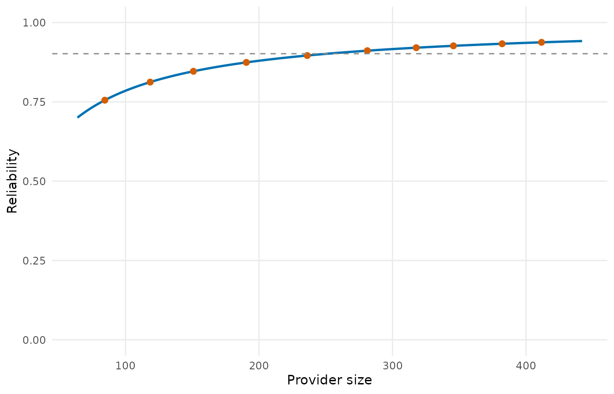

A measure can be fair and still be uninformative: if every provider’s value is mostly sampling noise, the differences between providers mean little. Inter-unit reliability (IUR) is the fraction of the variation of a provider-level measure that reflects true differences between providers rather than within-provider noise (He et al. 2019):
\[\mathrm{IUR} = \frac{\sigma^2_b}{\sigma^2_b + \sigma^2_w / n'} ,\]
with \(\sigma^2_b\) the between-provider variance of the true measures, \(\sigma^2_w\) the within-provider (record-level) variance and \(n'\) an effective provider size. A reliability of 0.7 or more is the conventional threshold for a measure used in public reporting.
Three estimators
iur() offers three ways of estimating the decomposition,
chosen by method:
-
"direct": from provider-level estimates and their standard errors (for instance a directly standardized rate and itsse_rate). The within variance is the pooled squared standard error. -
"bootstrap": from the rows of every provider, resampled with replacement within provider; the variance of the resampled measures is the within-provider variance. The measure is the ratio of sums \(\sum O / \sum E\) by default, or any function of (observed, expected, provider) you pass asmeasure. -
"split_half": every provider’s rows are split into two random halves and the agreement of the two halves’ measures across providers is converted into a reliability by the Spearman-Brown formula \(2r / (1 + r)\), with six agreement coefficients (weighted kappa, Kendall’s tau and Spearman’s rho of the measures cut into ordered categories, and Pearson’s r, Kendall’s tau and Spearman’s rho of the measures themselves).
library(pprof)
d <- sim_kecc(n_providers = 80, provider_size = c(20, 120), seed = 5)
pd <- pp_data(d, y = "y", x = c("x1", "x2", "x3"), provider = "provider",
patient = "patient", message = FALSE)
fit <- fit_logistic_fe(pd)
expected <- stats::plogis(stats::median(coef(fit)$gamma) + fit$linear_predictor)
boot <- iur("bootstrap", obs = fit$data$y, expected = expected, provider = fit$data$provider,
n_boot = 100, seed = 1)
boot
#> Bootstrap inter-unit reliability: 0.9017 (80 providers)
#> between variance 0.1025, within variance 2.807, effective size 251.3The direct estimator from a standardized rate and its standard error:
tst <- test(fit, statistic = "wald", variance = "robust")
rate <- standardize(fit, type = "direct", gamma_se = stats::setNames(tst$se, tst$provider))
iur("direct", estimate = rate$rate, se = rate$se_rate, size = fit$sizes$patients)
#> Direct inter-unit reliability: 0.894 (80 providers)
#> between variance 0.006379, within variance 0.05402, effective size 71.44And the split-half estimator:
iur("split_half", obs = fit$data$y, expected = expected, provider = fit$data$provider,
n_iter = 20, seed = 1)
#> Split-half inter-unit reliability (20 splits, 80 providers)
#> kappa kendall_cat spearman_cat pearson kendall spearman
#> 0.6659 0.7491 0.8098 0.8765 0.7250 0.8631Reliability by provider size
The reliability of one provider’s value depends on its size: \(\sigma^2_b / (\sigma^2_b + \sigma^2_w /
n_i)\). iur_curve() evaluates it at the deciles of
the size distribution, iur_stratified() repeats the whole
decomposition within strata of providers, and plot() draws
the curve:
iur_curve(boot, n_quantiles = 5)
#> size_group size iur
#> 1 min 64.0000 0.7002832
#> 2 quantile 1 101.5000 0.7874834
#> 3 quantile 2 170.6875 0.8617138
#> 4 quantile 3 258.6250 0.9042307
#> 5 quantile 4 331.6875 0.9237171
#> 6 quantile 5 396.8750 0.9354378
#> 7 max 442.0000 0.9416445
iur_stratified(boot, cuts = c(40, 80))
#> stratum n_providers iur
#> 1 all 80 0.9017072
#> 2 40 < size <= 80 5 0.8990621
#> 3 80 < size <= 442 75 0.9015199
plot(boot)
Reading the result
-
iur: the overall reliability;iur_providers: each provider’s reliability at its own size. -
s2_between,s2_within,n_prime: the components. A negative between variance (a measure that does not vary between providers more than noise would make it) is reported as a reliability of 0 with a warning. - For the bootstrap,
replicatesholds the resampled measures, so that the Monte Carlo error can be judged by rerunning with another seed.